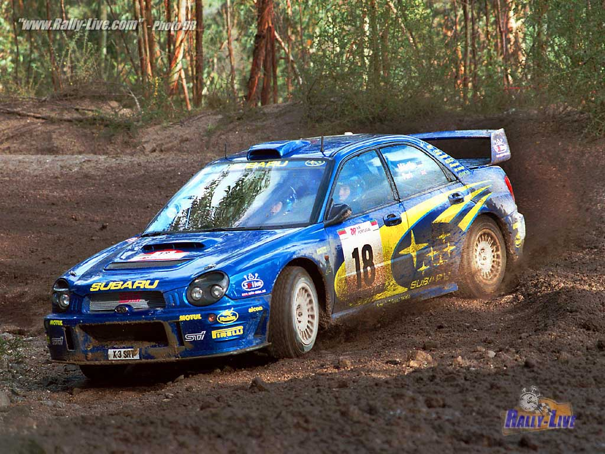

SPECIAL STAGE RALLYING
Special Stage Rallying is the most popular form of Motorsport in Ireland and it continues to grow in popularity all the time. There are many reasons for this, one being the fact that events can last from eight hours for a single day, to as long as twenty-four hours of competition on a three day event. This form of Motorsport evolved back in the 1950's from what we nowadays call Navigation Rallying. Since then, it has rapidly become an Irish favorite and large crowds of spectators attend many events
 Special Stage Rallies take place on sections of open road with a public. Events are decided by the time taken to travel a particular route. It is generally over the "stages" that events are won and lost, when competitors have to drive over the closed roads as fast as they can in order to produce the quickest time. The less time you take, the fewer penalties you incur. There are two types of Special Stage Rallies: forestry events which are held on forest (dirt) roads and tarmac events which are held on tarmac roads.